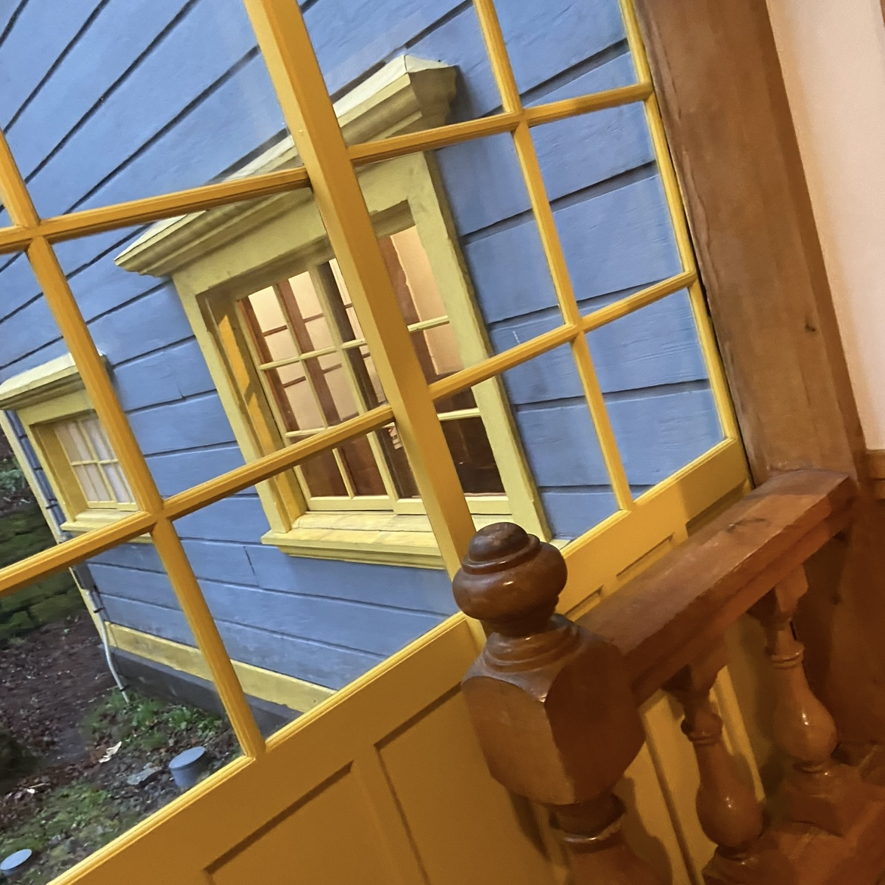

近代建築紹介
旧函館区公会堂
北海道・函館市末広町に位置。旧函館区公会堂は明治43年（1910）に建てられた、洋風建築の代表的建物です。
昭和49年（1974）に国の重要文化財に指定されました。
気品漂う内部には華やかな雰囲気の家具や調度品が展示されています。
最大の特徴は黄色と青のコントラストが美しい外観です。2階のバルコニーからは、函館港の眺望を一望できます。
photo gallery

